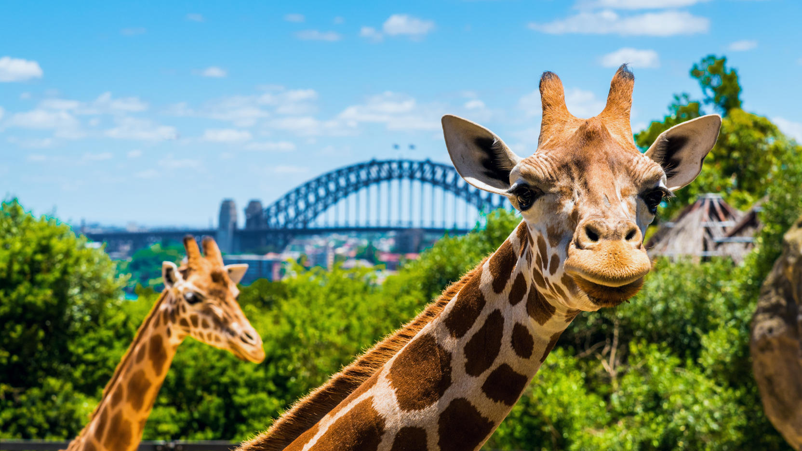
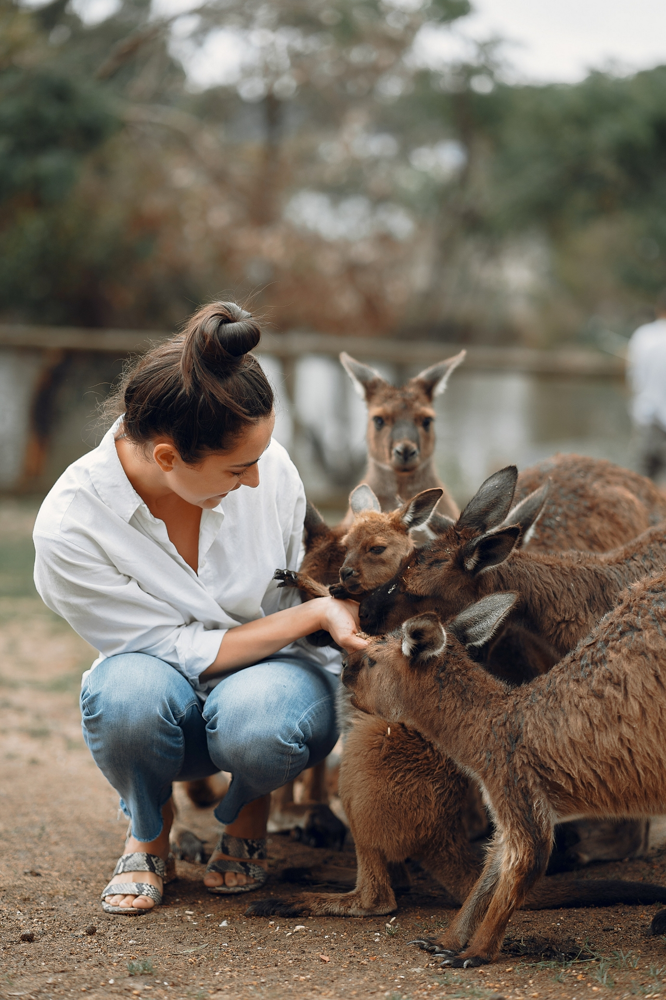
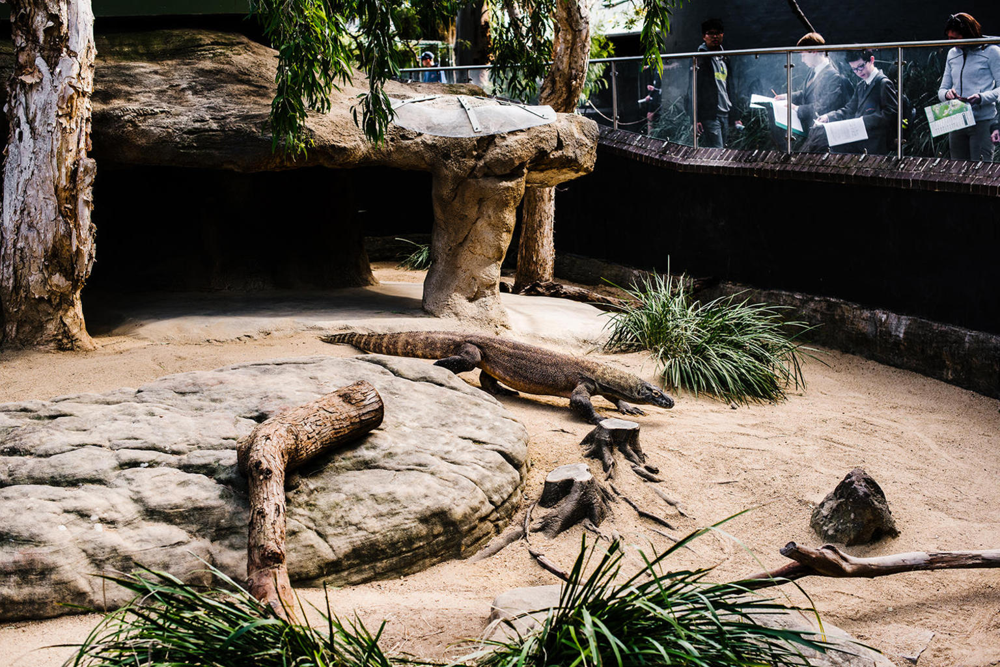

Sydney
State of New South Wales
Sydney
Located on Australia's east coast, the metropolis surrounds Sydney Harbour and extends about 70 km (43.5 mi) towards the Blue Mountains to the west, Hawkesbury to the north, the Royal National Park and Macarthur to the south and south-west. Greater Sydney is made up of 658 suburbs, spread across 33 local government areas. Residents of the city are known as "Sydneysiders".

"We can't choose where we come from but we can choose where we go from there"
Opera House
If a person who has not been to Sydney is asked what this city is associated with, then for sure every second person will answer - “Opera House”. The Sydney Opera House, one of the most famous buildings in the world, is located on the banks of Bennelong Point. The building was designed by Danish architect Jorn Utzon. With its white sloping roofs, the Performing Arts Center looks like a giant ship that is setting sail.
Sea Life Sydney Aquarium
The largest zoo in the world that has collected thousands of animals living only on the "Green" continent and beyond. The difference between this zoo and the usual ones for us lies in the proximity to animals.
The aqueduct stands out against the background of the zoo, in the past serving as a bridge, now serves as a reminder of the medieval grottoes. The zoo has 8 themed areas and an exhibition of moving dinosaurs!
Harbour Bridge
The locals gave the bridge a nickname - "hanger".
The Sydney Harbor Bridge is one of the largest steel arch bridges in the world! The bridge crosses Port Jackson, thereby serving as a connection between the South Bank and the North. It has car lanes, railroad tracks, bike lanes and pedestrian sidewalks. Excursions are organized for the daredevils, where you can climb to the very top along the side beam.
Taronga
  The Taronga Zoo is located in the Sydney suburb of Mosman. It complies with world standards and provides an opportunity to see up close both representatives of the local fauna and other animals from all over the world.
Zoo
One of the main attractions of the zoo is the “Roar and Snort” tour, during which visitors stay in the park overnight to listen to the sounds of the night life of animals. The second highlight of the Taronga Zoo is the Nura Diya tour, during which the guides tell stories from the life of the natives.